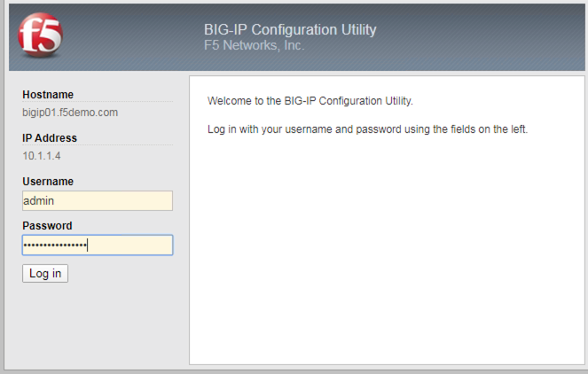
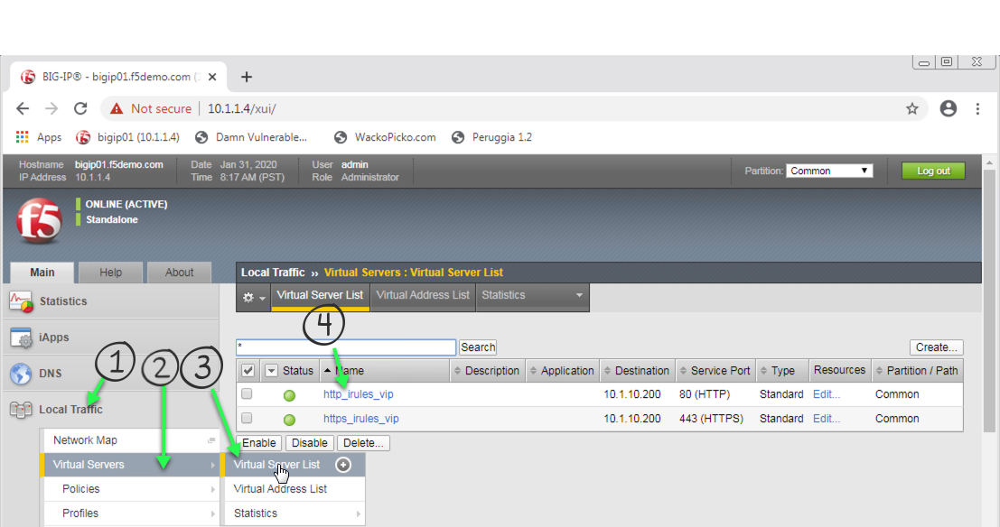
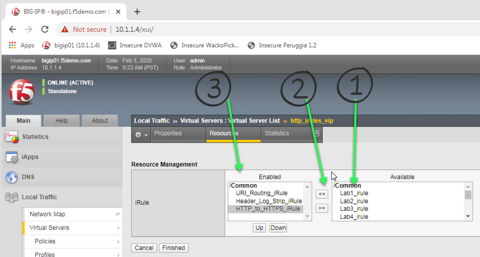
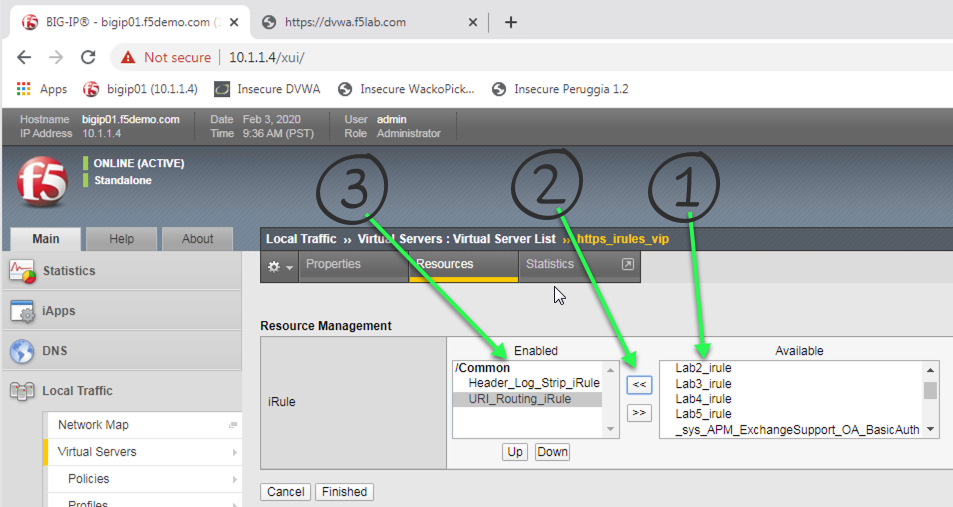
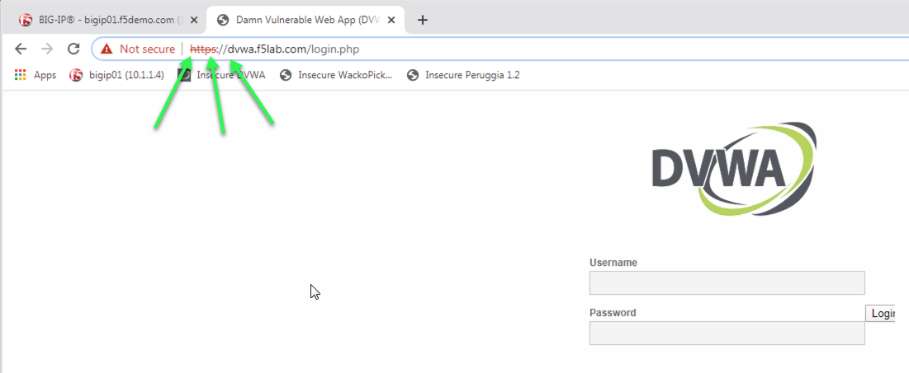
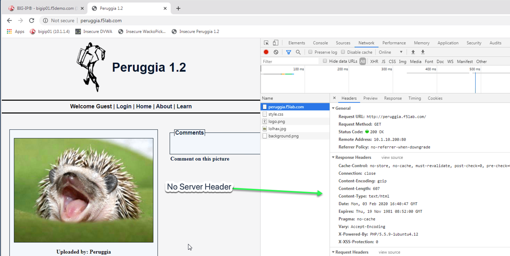
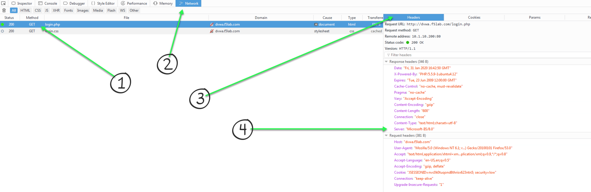

F5 and Hashicorp Basics > 2. Class Title > 2.1.1. Module 1 Title Source |
2.1.1.3. Lab 3 - HTTP to HTTPS Redirect (EXAMPLE)¶
- Create an iRule to redirect all traffic that arrives at an HTTP virtual server to be redirected to the same IP address but using an HTTPS port.
- The full original HTTP request should be maintained when re-directing. Example http://my.domain.com/app1/index1.html should redirect to https://my.domain.com/app1/inex.html
- Traffic goes to the HTTPS virtual server should still perform the pool selection and should still perform the header stripping from previous labs.
Important
Estimated completion time: 20 minutes
Open Chrome Browser
Enter https://bigip1 into the address bar and hit Enter
- Login with username: admin
password: admin.F5demo.com
Click Local Traffic -> iRules -> iRules List
Click Create button

Enter Name of HTTP_to_HTTPS_iRule
Enter Your Code
Click Finished
Click Local Traffic -> Virtual Servers -> Virtual Server List
Click on http_irules_vip
Click on the Resources tab.
Click Manage button for the iRules section.

Click on HTTP_to_HTTPS_iRule from the Available box and click the << button, thus moving it to the Enabled box, your first, second, and now third iRule’s should be in the Enabled box.
Click the Finished button.
Click Local Traffic -> Virtual Servers -> Virtual Server List.
Click on https_irules_vip

Click on the Resources tab
Click Manage button for the iRules section
Click on the 2 iRules you require to enable pool selection and Server header removal from the previous labs from the Available box and click the << button, thus moving them to the Enabled box.
Enter http://dvwa.f5lab.com/ and ensure you get redirected to the HTTPS virtual server.
Now enter http://wackopicko.f5lab.com/ and ensure you get redirected to the HTTPS virtual server.
Finally, enter http://peruggia.f5lab.com/ ensure you get redirected to the HTTPS virtual server.
From the previous lab the next two tests should confirm everything is working as before, but using HTTPS.
Look at the headers for each of your requests. Did you log them all? What is the value of the Server header?

{kind=link}
{kind=link}
{kind=link}
{kind=link}
{kind=link}
{kind=link}
Attention
OPTIONAL: Instead of removing the Server header in the response, change the value of the Server header to Microsoft-IIS/7.0.
{kind=link}
Hint
Basic Hint if you need a hint here is some example code:
Link to DevCentral: https://clouddocs.f5.com/api/irules/HTTP__redirect.html
If you are really stuck, here is what we are looking for: